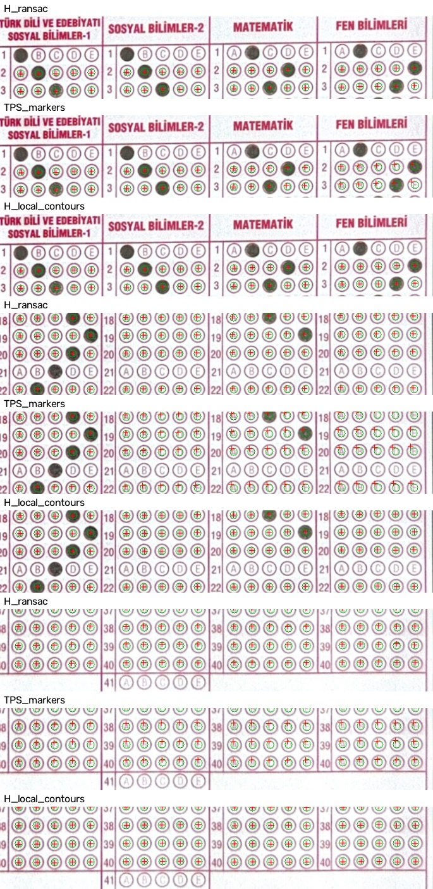

E1 — Marker TPS ve yerel kontur düzeltmesi
Bu sonuçlar otomatik eşleşme göstergesidir; doğrulanmış ground truth veya cevap doğruluğu değildir. Eşleşmeler başlangıç homografisinin 10 px çevresinden seçildiği için büyük sapmalar ve zor balonlar dışarıda kalabilir. Seçim homografiyi kayırabilir. Yöntemler aynı dondurulmuş değerlendirme noktalarında karşılaştırıldı; yerel düzeltmenin eğitildiği satırlar ölçümden çıkarıldı. Aynı fiziksel kağıdın çekimleri bağımsız test örnekleri sayılmaz.
Yeşil halka: otomatik saptanan kontur merkezi. Kırmızı artı: yöntemin tahmini. Üst, orta ve alt bölgelerde üçer yöntem gösterilir. Tüm pikseller 2000 px yüksekliğindeki çalışma uzayındadır. Çap normalizasyonu yaklaşık 22 px kullanır.
Referanstaki 16 merkezin incelemesi · Tüm ölçümler ve koordinatlar
flat_front_001
10 marker, 10 inlier. Hücreler: medyan / %95 hata px (değerlendirilen balon sayısı).
| Yöntem | turkce | sosyal | matematik | fen |
|---|
| H_all | 0.82 / 2.12 (160) | 1.40 / 2.63 (178) | 1.96 / 3.17 (160) | 2.17 / 3.39 (160) |
| H_ransac | 0.82 / 2.12 (160) | 1.40 / 2.63 (178) | 1.96 / 3.17 (160) | 2.17 / 3.39 (160) |
| TPS_markers | 2.02 / 4.63 (160) | 3.71 / 5.99 (178) | 5.48 / 7.56 (160) | 7.30 / 8.90 (160) |
| H_TPS_all | 1.30 / 2.45 (160) | 2.12 / 3.32 (178) | 2.91 / 4.11 (160) | 3.17 / 4.37 (160) |
| H_TPS_inliers | 1.30 / 2.45 (160) | 2.12 / 3.32 (178) | 2.91 / 4.11 (160) | 3.17 / 4.37 (160) |
| H_local_contours | 0.25 / 0.54 (160) | 0.27 / 0.48 (178) | 0.28 / 0.53 (160) | 0.30 / 0.69 (160) |

flat_angled_001
10 marker, 10 inlier. Hücreler: medyan / %95 hata px (değerlendirilen balon sayısı).
| Yöntem | turkce | sosyal | matematik | fen |
|---|
| H_all | 0.75 / 1.20 (160) | 0.62 / 1.02 (178) | 0.44 / 0.89 (160) | 0.63 / 1.35 (159) |
| H_ransac | 0.75 / 1.20 (160) | 0.62 / 1.02 (178) | 0.44 / 0.89 (160) | 0.63 / 1.35 (159) |
| TPS_markers | 0.70 / 1.25 (160) | 0.84 / 1.39 (178) | 1.32 / 1.91 (160) | 1.85 / 2.58 (159) |
| H_TPS_all | 0.74 / 1.37 (160) | 0.79 / 1.39 (178) | 0.80 / 1.44 (160) | 0.70 / 1.24 (159) |
| H_TPS_inliers | 0.74 / 1.37 (160) | 0.79 / 1.39 (178) | 0.80 / 1.44 (160) | 0.70 / 1.24 (159) |
| H_local_contours | 0.25 / 0.54 (160) | 0.28 / 0.55 (178) | 0.27 / 0.52 (160) | 0.29 / 0.65 (159) |

curved_front_001
10 marker, 10 inlier. Hücreler: medyan / %95 hata px (değerlendirilen balon sayısı).
| Yöntem | turkce | sosyal | matematik | fen |
|---|
| H_all | 0.72 / 1.18 (160) | 0.77 / 1.60 (177) | 0.83 / 1.75 (160) | 1.26 / 2.83 (160) |
| H_ransac | 0.83 / 1.32 (160) | 0.97 / 1.67 (177) | 1.14 / 1.87 (160) | 1.64 / 2.95 (160) |
| TPS_markers | 0.50 / 1.02 (160) | 0.54 / 1.66 (177) | 1.21 / 2.50 (160) | 2.56 / 3.84 (160) |
| H_TPS_all | 0.60 / 1.21 (160) | 0.62 / 1.42 (177) | 0.38 / 1.49 (160) | 0.85 / 2.89 (160) |
| H_TPS_inliers | 0.60 / 1.21 (160) | 0.62 / 1.42 (177) | 0.38 / 1.49 (160) | 0.85 / 2.89 (160) |
| H_local_contours | 0.30 / 0.71 (160) | 0.28 / 0.52 (177) | 0.27 / 0.49 (160) | 0.27 / 0.62 (160) |

curved_angled_001
10 marker, 9 inlier. Hücreler: medyan / %95 hata px (değerlendirilen balon sayısı).
| Yöntem | turkce | sosyal | matematik | fen |
|---|
| H_all | 0.50 / 1.91 (160) | 0.78 / 3.50 (173) | 0.95 / 4.20 (159) | 2.60 / 6.38 (154) |
| H_ransac | 0.89 / 1.73 (160) | 1.77 / 2.71 (173) | 2.23 / 3.32 (159) | 1.55 / 2.50 (154) |
| TPS_markers | 0.85 / 1.70 (160) | 1.11 / 2.26 (173) | 0.91 / 3.57 (159) | 2.52 / 6.67 (154) |
| H_TPS_all | 0.82 / 1.48 (160) | 1.13 / 2.74 (173) | 1.50 / 4.28 (159) | 2.71 / 7.22 (154) |
| H_TPS_inliers | 0.99 / 2.30 (160) | 1.74 / 3.15 (173) | 2.35 / 3.84 (159) | 1.91 / 3.07 (154) |
| H_local_contours | 0.31 / 0.70 (160) | 0.34 / 0.72 (173) | 0.30 / 0.66 (159) | 0.33 / 0.70 (154) |